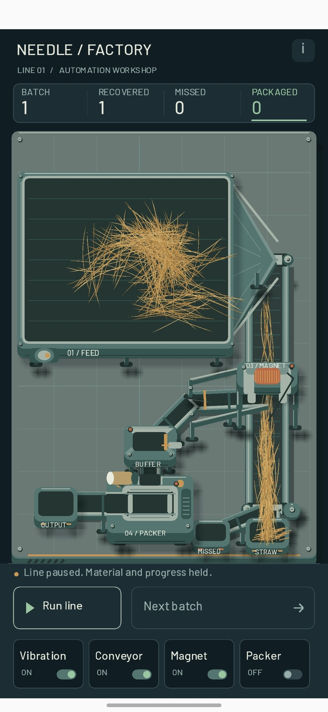

008 — Работает, падла! Теперь есть видео
После ваты и волосатых шариков сделал нечто среднее арифметическое. Солома всё ещё не претендует на обложку сельскохозяйственного журнала, но хотя бы перестала каждый раз открывать новый биологический вид.
А главное — наконец не забыл записать видео для бложика. Теперь можно не только смотреть на завод, но и увидеть его в работе. Работает, падла! В три часа ночи это уже вполне достаточный повод для маленького праздника.
Правда, перемещение соломы получилось немного не таким, как я представлял. Я её не цепляю и не тащу за пальцем: она толкается перед точкой касания. Получился палец-бульдозер. Для разгребания сена, возможно, вполне подходящая профессия.
Пока думаю: нормально так оставить или всё-таки переделать? Работает — аргумент весомый. Но хочется ещё понять, насколько удобно этим пользоваться.
Фото и видео

008 — It Works, Damn It! And There's Video
After cotton wool and hairballs, I made something like the arithmetic mean of the two. The straw still isn't ready for the cover of a farming magazine, but at least it has stopped discovering a new biological species with every revision.
More importantly, I finally remembered to record a video for the blog. Now you can see the factory in action instead of just looking at a screenshot. It works, damn it! At three in the morning, that's a perfectly good reason for a small celebration.
The straw movement isn't quite what I imagined, though. I don't grab it and drag it behind my finger: it gets pushed ahead of the touch point. I've made a bulldozer finger. For clearing hay, that might actually be a reasonable occupation.
I'm still thinking: is this fine as it is, or should I rework it? “It works” is a strong argument. But I also want to find out how comfortable it is to use.